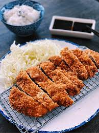

The GREATEST Katsu

Description
Pork cutlet katsu is one of the most tastiest foods ever in the earth EVER. It should be crispy and tender, surrounded by a crunchy breading. It goes REALLY well with rice, and EVEN BETTER with rice and CURRY.
Ingredients
- Pork cutlet
- Egg
- Flour
- Panko crumbs
- Salt and pepper
- Katsu sauce
- Sesame oil
Steps
- 1. Cut up the Pork
- 2. Dip the pork in an egg bath
- 3. Slap the eggy pork into some Flour
- 4. Dip the floured pork back in the egg wash
- 5. Slap the floured, eggy pork into the panko crumbs, and cover that shit well.
- 6.Throw that fucker into some boiling sesame oil, and flip it every now and then until it's light brown and crispy.
- 7. Enjoy that guy over some rice.